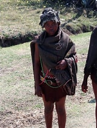
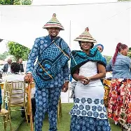

Tjale
Tjale- used by basotho women
see more
Seshoeshoe
Seshoeshoe-Dress worn by basotho women.
see more
Seanamarena
Seanamarena-Wearing a Basotho blanket signifies sense of identity and is a way of preserving their heritage.
see more
Thethana

Thethana-The Basotho designed dress for girls.
see more
mose oa khomo
Mose oa khomo-Women dress
see more
Mokorotlo
Mokorotlo hat -Mokorotlo design features the traditional Sesotho hat .
see more
kobo and mokorotlo
This is the Basotho male attire
Seshoeshoe
Seshoeshoe dress-is a traditional dress worn by Basotho women during important cultural such as celebrations.
see more
seanamarena
Basotho blankets are worn during significant events.
see more
Skirts
These are the seshoeshoe fabric skirts
see more
Lefitori
Basotho men wear blankets in initiations.
see more
Kuaoane and mose oa litobolonya
women attire in mokhibo performance.
see more
Mose oa litobolonya
The traditional attire when doing litobolonya dance.
see more
Setea and kholokoane
This is women initiation attire.
see more
Kuoane
A sheep-hide product used by women in mokhibo performance.see more
Leqapha

Leqapha is used by men from initiation.
see more
Shoes
Shoes made from seshoeshoe fabric.
see more
Drawser
Seshoeshoe fabric drawser
see more
Shirts
Men's shirts made of seshoeshoe fabric
see more
Aprons
Seshoeshoe suits

This is a traditional wedding attire.
see more
Seshoeshoe dress and mokorotlo

Seshoeshoe designs.
see more
Seshoeshoe doek
A seshoeshoe fabric doek worn by Basotho women.
see more
Seshoeshoe jacket
Designed seshoeshoe jacket.
see more
shirt
Men's shirts made of seshoeshoe fabric
see more
Seanamarena and hats
This is men initiation attire.
see more
{kind=link}